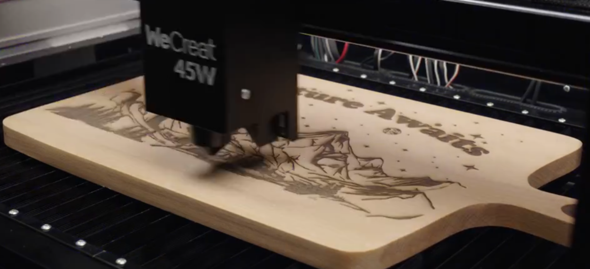

Professional-grade laser engraving used to require expensive equipment, technical expertise, and dedicated workshop space. Today, WeCreat has changed that equation entirely. Their innovative laser engravers deliver studio-quality results while remaining accessible to beginners, hobbyists, and small business owners alike.
Whether you're personalizing gifts, creating custom signage, or launching a side business, WeCreat machines combine powerful performance with intuitive operation. The result? You can produce intricate designs, precise cuts, and professional finishes without years of training or a massive budget.
Why Laser Engraving Has Become Accessible
Traditional laser engraving systems demanded significant investment—both financial and educational. WeCreat has democratized this technology by engineering machines that balance professional capabilities with user-friendly interfaces. Their software guides you through each project, while automated features handle the complex technical details.
What sets WeCreat apart is their commitment to making advanced technology approachable. Instead of overwhelming menus and cryptic settings, you get clear workflows, helpful tutorials, and responsive customer support. This philosophy means your first project can look polished, even if it's your first time using a laser engraver.
WeCreat Vision Pro: Power Meets Precision
The WeCreat Vision Pro represents the pinnacle of accessible professional engraving. Its 45W BeamFocus™ dual-diode laser delivers cutting power equivalent to a 60W CO₂ system, yet it operates with the simplicity of a desktop printer.
Vision Pro Highlights

WeCreat Vision Pro
The Vision Pro features a 45W dual-diode laser that cuts through 20mm acrylic or 25mm wood in a single pass. Its ultra-fine 0.08×0.08mm laser spot ensures high-resolution engraving, perfect for intricate designs and tiny text. Automatic lift and LiDAR auto-focus adjust to material thickness automatically—no manual measurements needed.
Key Features That Make Vision Pro Stand Out
- One-Pass Cutting: The Vision Pro cuts through thick materials without multiple passes, saving time and ensuring clean edges.
- Ultra-Fine Precision: With a 0.08×0.08mm laser spot, you can engrave fine details that rival professional studios.
- Smart Automation: LiDAR auto-focus and automatic lift eliminate guesswork, so you can focus on creativity rather than calibration.
- Versatile Materials: Works beautifully on wood, acrylic, leather, fabric, and more, making it ideal for diverse projects.
WeCreat Lumos: Portable Powerhouse
For creators who need flexibility and portability, the WeCreat Lumos combines a 10W diode laser with a 3W infrared laser in a compact design. This dual-laser system opens up possibilities that single-laser machines simply can't match.
Lumos Features

WeCreat Lumos
The Lumos portable dual-laser engraver features a 10W diode laser for versatile material work and a 3W infrared laser that enables MOPA-style color engraving on metals. With engraving speeds up to 4000mm/s—three times faster than traditional 2W infrared lasers—the Lumos delivers professional results in a compact, mobile package.
Why Dual-Laser Technology Matters
The Lumos infrared laser enables something remarkable: color engraving on metal without specialized equipment. This MOPA-style technology lets you create vibrant, permanent marks on stainless steel, aluminum, and other metals—a capability typically reserved for industrial machines costing tens of thousands of dollars.
Whether you're personalizing water bottles, creating custom jewelry, or marking tools, the Lumos brings professional metal engraving within reach. Its high-speed performance means you can complete projects quickly, making it perfect for small-batch production or rapid prototyping.
Real-World Applications
Both WeCreat machines excel across countless applications. Small business owners use them to create custom signage, branded merchandise, and promotional items. Hobbyists personalize everything from cutting boards to phone cases. Artists produce limited-edition prints and intricate designs.
The beauty of WeCreat systems is their versatility. One machine can handle projects ranging from delicate paper cutting to robust acrylic fabrication. The intuitive software means you don't need graphic design experience—import your design, adjust settings with helpful presets, and let the machine do the work.
Getting Started Tips
- Start Simple: Begin with basic designs on wood or acrylic to familiarize yourself with the WeCreat workflow.
- Use Presets: The software includes material-specific presets that take the guesswork out of settings.
- Test First: Always run a test engrave on scrap material before working on your final piece.
- Explore Materials: WeCreat machines work on dozens of materials—experiment to discover new possibilities.
- Join Communities: Connect with other WeCreat users to share tips, designs, and inspiration.
The Beginner-to-Pro Journey
What makes WeCreat truly special is how it grows with you. As a beginner, the automated features and clear interface help you produce impressive results immediately. As your skills develop, the advanced settings and powerful capabilities support increasingly complex projects.
Many users start with simple personalization projects and gradually expand into custom product lines, small business ventures, or artistic pursuits. The WeCreat ecosystem—including software updates, material guides, and community support—ensures your machine remains valuable as your ambitions grow.
Professional Results, Accessible to Everyone
WeCreat has successfully bridged the gap between professional-grade equipment and beginner-friendly operation. Whether you choose the powerful Vision Pro for workshop projects or the versatile Lumos for portable creativity, you're investing in technology that delivers professional results without requiring professional expertise.
The future of creative making is here, and it's more accessible than ever. With WeCreat, your first project can look like your hundredth—professional, polished, and precisely executed.